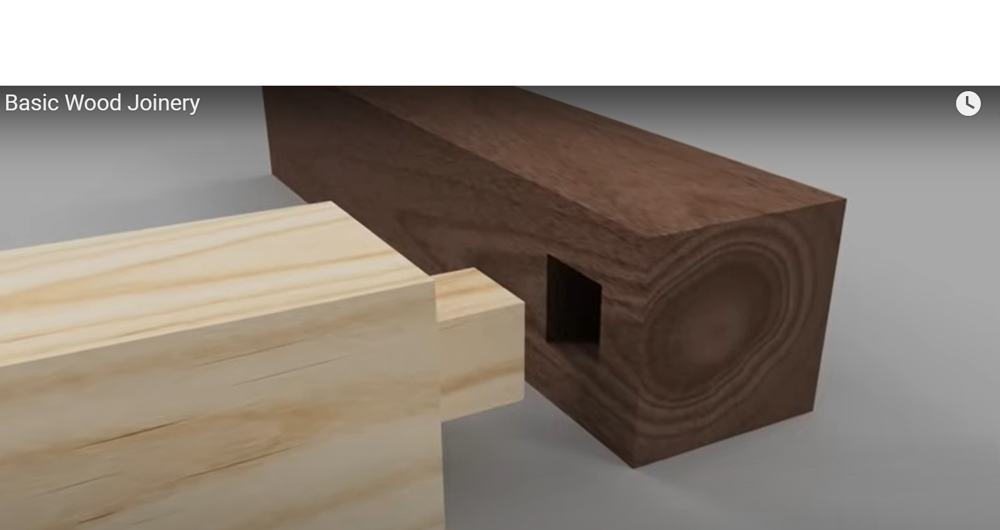

Your work
Student details
Your entries save automatically in this browser. Use Print / Save PDF before leaving the page.
Weeks 5-6
This module
Mark, cut and test-fit the primary frame joints with control and accuracy.
Theory 1
Frame components
The frame supports the thick, slightly overhanging top and keeps the bedside table rigid, square and stable. The slim tapered legs carry the load to the floor, while the rails connect the legs and resist movement. The broad front apron adds strength across the front and provides an important visual feature through its curved lower edge.
Matching components should be prepared and marked as pairs so opposite legs, side rails and related parts remain consistent. Keep paired pieces together during machining and check that tapers, lengths and joint positions align before assembly. Label every component clearly with its position, such as front left, rear right or side rail, to prevent parts being reversed or mixed up.
Consider grain orientation when selecting and laying out components so narrow sections remain strong and visible surfaces look balanced. Mark joint shoulders from the same face-side and face-edge datums on every part. This reduces accumulated error and helps the frame assemble accurately.
Theory 2
Mortise-and-tenon joints
Mortise-and-tenon joints suit a tapered-leg bedside table because they create strong, neat connections between the legs, rails and front apron without relying only on screws or nails. The tenon fits into a matching mortise, providing a large gluing area and helping the frame resist twisting and racking. Accurate shoulders are important because they close against the leg and control the final position of the rail.
Straight, even cheeks help the tenon fit properly without leaning or binding. Mark and cut with the grain direction in mind so fibres are not weakened or split near the joint. During dry fitting, the tenon should slide into the mortise with firm hand pressure and sit fully against the shoulders.
Do not hammer a tight joint, as this may split the leg or damage the tenon. A loose fit can produce a weak joint, while an over-tight fit may scrape away glue and become glue-starved. Trial assemble the frame, then check diagonals, squareness and alignment before gluing.

Theory 3
Controlled cutting
Controlled cutting means using each machine and hand tool for the task it performs best, while following the workshop SOP and teacher instructions. Before cutting mortises, tapers, rails or the shaped front apron, check machine settings on a test piece from similar timber. On the mortiser, secure the work firmly with clamps, keep guards in place and remove material in small overlapping cuts rather than forcing the chisel.
On the bandsaw, adjust the guard close to the timber, keep hands clear of the blade and use push tools where required. Curves and tapers should be cut just outside the marked line so the final shape can be refined safely with a plane, chisel, rasp, file or sanding tool. Always consider grain direction when planing or chiselling, because cutting against the grain can cause splitting or tear-out.
Remove waste gradually, maintain a balanced stance and stop if the timber moves, binds or requires excessive force.
Core project resource
Bedside Table project plans
Use the supplied drawing as the controlling source for dimensions and construction details. Do not scale the on-screen image.
Open project plansGuided practice
Weeks 5-6 knowledge checks
Choose an answer, check it and use feedback to improve. The hint becomes more specific after an incorrect attempt.
Apply your learning
Scaffolded written responses
Write a genuine short answer first, then use the feedback and model response to improve it.
Finish the two-week block
Save your evidence
Download this completed module as a PDF before changing devices or clearing browser data.